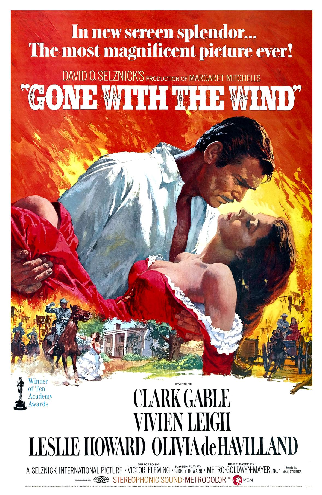

-
THE GODFATHER(1972)
Cast:Marlon Brando, Al Pacino, James Caan
Director:Francis Ford Coppola
Genre:Drama, Crime
-
GONE WITH THE WIND(1939)

Cast: Vivien Leigh, Clark Gable, Leslie Howard, OliviadeHaviliand
Directors: Victor Fleming, James Fitzpatrick
Genre:Drama, History, Romance -
BREAKFAST AT TIFFANY'S (1961)
Cast: Audrey Hepburn, Gearge Peppard, Patricia Neal
Directors: Blake Edwards
Genre:Drama, Comedy, Romance -
FORREST GUMP(1994)
Cast: Tom Hanks, Robin Wright, Gary Sinise, Sally Field
Directors: Robert Zemeckis
Genre:Drama, Romance
-
SCHINDLERS' LIST(1993)
Cast:Liam Neeson, Ben Kingsley, Ralph Fiennes
Director:Steven Spielberg
Genre:Biography, Drama, History
-
SOME LIKE IT HOT (1959)
Cast:Marilyn Monroe, Tony Curtis, Jack Lemmon
Director:Billy Wilder
Genre:Comedy, Music, Romance -
STAR WARS (1977)
Cast:Mark Hamill, Harrison Ford, Carrie Fisher
Director:George Lucas
Genre:Action, Adventure, Fantasy
-
PSYCHO (1960)
Cast: Anthony Perkins, Vera Miles, John Gavin
Directors: Alfred Hitchcock
Genre:Horror, Mystery, Thriller -
ONE FLEW OVER THE CUCKOO'S NEST (1975)
Cast: Jack Nicholson, Louise Fletcher, Michael Berryman, Peter Brocco
Director:Milos Forman
Genre:Drama
-
2001: A SPACE ODYSSEY (1968)
Cast:Keir Dullea, Gary Lockwood, William Sylvester, Daniel Richter
Director:Stanley Kubrick
Genre:Adventure, Sci-Fi
-
THE SILENCE OF THE LAMBS (1991)
Cast:Jodie Foster, Anthony Hopkins
Director:Jonathan Demme
Genre:Crime, Drama, Thriller -
THE SHAWSHANK REDEMPTION (1994)
Cast: Tim Robbins, Morgan Freeman, Bob Gunton, William Sadler
Director: Frank Darabont
Genre: Drama
-
THE LORD OF THE RINGS (2003)
Cast:Elijah Wood, Viggo Mortensen, Ian McKellen, Orlando Bloom
Director:Peter Jackson
Genre: Action, Adventure, Drama
-
TITANIC (1997)
Cast: Leonardo DiCaprio, Kate Winslet, Billy Zane, Kathy Bates
Director:James Cameron
Genre: Romance, Drama -
FIGHT CLUB (1999)
Cast: Brad Pitt, Edward Norton, Meat Loaf, Zach Grenier
Director:David Fincher
Genre: Drama
-
MY FAIR LADY (1964)
Cast: Audrey Hepburn, Rex Harrison, Stanley Holloway, Wilfrid Hyde-White
Director:George Cukor
Genre: Drama, Family, Musical -
IN THE MOOD FOR LOVE (2000)
Cast:Tony Chiu-Wai Leung, Maggie Cheung, Siu Ping-Lam
Director:Kar-Wai Wong
Genre: Drama, Romance -
THE PIANIST (2002)
Cast: Adrien Brody, Thomas Kretschmann, Frank Finlay, Emilia Fox
Director: Roman Polanski
Genre: Biography, Drama, Music -
THE LAST SAMURAI (2003)
Cast: Tom Cruise, Ken Watanabe, Billy Connoly
Director: Edward Zwick
Genre: Action, Drama -
PULP FICTION (1994)
Cast: John Travolta, Uma Thurman, Samuel L. Jackson, Bruce Willis
Director: Quentin Tarantino
Genre: Crime, Drama -
THE GREEN MILE (1999)
Cast: Tom Hanks, Michael Clarke Duncan, David Morse, Bonnie Hunt
Director: Frank Darabont
Genre: Crime, Drama, Fanrasy